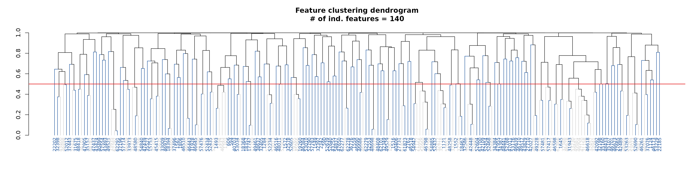

Feature summary
feature_summary.RmdCreate Omiprep object
library(omiprep)
# import data
data <- read.csv(system.file("extdata", "dummy_data.csv", package = "omiprep"), header=T, row.names = 1, check.names = FALSE) |> as.matrix()
samples <- read.csv(system.file("extdata", "dummy_samples.csv", package = "omiprep"), header=T, row.names = 1)
features <- read.csv(system.file("extdata", "dummy_features.csv", package = "omiprep"), header=T, row.names = 1)
features$feature_id = as.character(features$feature_id)
# create object
mydata <- Omiprep(data = data, samples = samples, features = features)Summary of Omiprep object
summary(mydata)
#> Omiprep Object Summary
#> --------------------------
#> Samples : 125
#> Features : 253
#> Data Layers : 1
#> Layer Names : input
#>
#> Sample Summary Layers : none
#> Feature Summary Layers: none
#>
#> Sample Annotation (metadata):
#> Columns: 10
#> Names : sample_id, parent_sample_id, client_identifier, sex, age, bmi, LC.MS.Polar, LC.MS.Neg, LC.MS.Pos.Early, LC.MS.Pos.Late
#>
#> Feature Annotation (metadata):
#> Columns: 14
#> Names : feature_id, pathway_sortorder, biochemical, super_pathway, sub_pathway, comp_id, platform, chemical_id, ri, mass, cas, pubchem, kegg, group_hmdb
#>
#> Exclusion Codes Summary:
#>
#> Sample Exclusions:
#> Exclusion | Count
#> -----------------
#> user_excluded | 0
#> extreme_sample_missingness | 0
#> user_defined_sample_missingness | 0
#> user_defined_sample_totalpeakarea | 0
#> user_defined_sample_pca_outlier | 0
#>
#> Feature Exclusions:
#> Exclusion | Count
#> -----------------
#> user_excluded | 0
#> extreme_feature_missingness | 0
#> user_defined_feature_missingness | 0
#> user_defined_feature_skewness | 0Run standard quality control
mydata = quality_control(mydata)
#>
#> ── Starting Omics QC Process ───────────────────────────────────────────────────
#> ℹ Validating input parameters
#> ✔ Validating input parameters [9ms]
#>
#> ℹ Sample & Feature Summary Statistics for raw data
#> ℹ Number of informative PCs (Scree acceleration factor): 2
#> ℹ Sample & Feature Summary Statistics for raw data✔ Sample & Feature Summary Statistics for raw data [2.1s]
#>
#> ℹ Copying input data to new 'qc' data layer
#> ✔ Copying input data to new 'qc' data layer [34ms]
#>
#> ℹ Assessing for extreme sample missingness >=80% - excluding 0 sample(s)
#> ✔ Assessing for extreme sample missingness >=80% - excluding 0 sample(s) [17ms]
#>
#> ℹ Assessing for extreme feature missingness >=80% - excluding 0 feature(s)
#> ✔ Assessing for extreme feature missingness >=80% - excluding 5 feature(s) [17m…
#>
#> ℹ Assessing for sample missingness at specified level of >=20% - excluding 0 sa…
#> ✔ Assessing for sample missingness at specified level of >=20% - excluding 1 sa…
#>
#> ℹ Assessing for feature missingness at specified level of >=20% - excluding 0 f…
#> ✔ Assessing for feature missingness at specified level of >=20% - excluding 46 …
#>
#> ℹ Calculating total sum abundance outliers at +/- 5 Sdev - excluding 0 sample(s)
#> ✔ Calculating total sum abundance outliers at +/- 5 Sdev - excluding 0 sample(s…
#>
#> ℹ Running sample data PCA outlier analysis at +/- 5 Sdev
#> ✔ Running sample data PCA outlier analysis at +/- 5 Sdev [17ms]
#>
#> ℹ Sample PCA outlier analysis - re-identify feature independence and PC outlier…
#> ℹ Number of informative PCs (Scree acceleration factor): 2
#> ℹ Sample PCA outlier analysis - re-identify feature independence and PC outlier…ℹ Sample PCA outlier analysis - re-identify feature independence and PC outlier…
#> ! The stated max PCs [max_num_pcs=10] to use in PCA outlier assessment is greater than the number of available informative PCs [2]
#> ℹ Sample PCA outlier analysis - re-identify feature independence and PC outlier…✔ Sample PCA outlier analysis - re-identify feature independence and PC outlier…
#>
#> ℹ Creating final QC dataset...
#> ℹ Number of informative PCs (Scree acceleration factor): 2
#> ℹ Creating final QC dataset...
#> ℹ Creating final QC dataset...── Step timings ──
#> ℹ Creating final QC dataset...
#> ℹ Creating final QC dataset...
#> step seconds pct
#> validation 0.00 0.0
#> summarise_raw 2.08 36.3
#> copy_layer 0.00 0.0
#> extreme_sample_missingness 0.00 0.0
#> extreme_feature_missingness 0.00 0.0
#> sample_missingness 0.00 0.0
#> total_sum_abundance 0.01 0.2
#> summarise_pca 1.76 30.7
#> summarise_final 1.66 29.0
#> total 5.73 100.0
#> ✔ Creating final QC dataset... [1.7s]
#>
#> ℹ 'Omics QC Process Completed
#> ✔ 'Omics QC Process Completed [16ms]Feature Summary
View feature summary from the QC pipeline
# Note: the quality_control() ultimately returns the feature_summary attribute as a matrix.
df <- t( as.data.frame(mydata@feature_summary[, 1:5, "input"]) )
df <- as.data.frame( round( df , 3) )
df <- cbind(feature_id = rownames(df), df)
df |> knitr::kable( digits = 3, row.names = FALSE, align = "c") |>
kableExtra::kable_styling(full_width = TRUE) | feature_id | missingness | outlier_count | n | mean | sd | median | min | max | range | skew | kurtosis | se | missing | var | disp_index | coef_variance | W | log10_W | k | independent_features |
|---|---|---|---|---|---|---|---|---|---|---|---|---|---|---|---|---|---|---|---|---|
| 48719 | 0.248 | 2 | 94 | 4.877 | 28.121 | 1 | 0.393 | 256.608 | 256.215 | 8.027 | 66.644 | 2.900 | 31 | 790.803 | 162.154 | 5.766 | 0.128 | 0.564 | NA | NA |
| 43532 | 0.568 | 1 | 54 | 1.296 | 1.096 | 1 | 0.302 | 7.172 | 6.870 | 3.189 | 13.306 | 0.149 | 71 | 1.201 | 0.927 | 0.846 | 0.675 | 0.977 | NA | NA |
| 46639 | 0.128 | 4 | 109 | 2.266 | 3.517 | 1 | 0.078 | 23.696 | 23.619 | 3.379 | 14.104 | 0.337 | 16 | 12.371 | 5.460 | 1.552 | 0.596 | 0.992 | 1 | 1 |
| 606 | 0.000 | 0 | 125 | 0.990 | 0.211 | 1 | 0.006 | 1.461 | 1.455 | -1.367 | 5.791 | 0.019 | 0 | 0.045 | 0.045 | 0.214 | 0.903 | 0.307 | 2 | 1 |
| 62279 | 0.168 | 1 | 104 | 1.315 | 1.146 | 1 | 0.180 | 7.637 | 7.457 | 2.539 | 8.964 | 0.112 | 21 | 1.313 | 0.998 | 0.871 | 0.759 | 0.997 | 3 | 1 |
Manually run feature summary
While feature summary is run as a part of the quality_control() function pipeline you can run the function yourself, on any layer you wish.
# NOTE:
# outlier_udist = number of IQRs from the median at which a value is flagged.
# 1.0 here is illustrative; in practice we favour 5.0, which is the default value
# for the quality_control() function.
feature_sum1 <- feature_summary(omiprep = mydata,
source_layer = "input",
outlier_udist = 1.0,
tree_cut_height = 0.5,
output = "data.frame",
cores = 1)Table of feature summary
feature_sum1 |>
head(n = 10) |>
knitr::kable( digits = 3, row.names = FALSE, align = "c") |>
kableExtra::kable_styling(full_width = FALSE) | feature_id | missingness | outlier_count | n | mean | sd | median | min | max | range | skew | kurtosis | se | missing | var | disp_index | coef_variance | W | log10_W | k | independent_features |
|---|---|---|---|---|---|---|---|---|---|---|---|---|---|---|---|---|---|---|---|---|
| 48719 | 0.248 | 17 | 94 | 4.877 | 28.121 | 1 | 0.393 | 256.608 | 256.215 | 8.027 | 66.644 | 2.900 | 31 | 790.803 | 162.154 | 5.766 | 0.128 | 0.564 | NA | NA |
| 43532 | 0.568 | 10 | 54 | 1.296 | 1.096 | 1 | 0.302 | 7.172 | 6.870 | 3.189 | 13.306 | 0.149 | 71 | 1.201 | 0.927 | 0.846 | 0.675 | 0.977 | NA | NA |
| 46639 | 0.128 | 22 | 109 | 2.266 | 3.517 | 1 | 0.078 | 23.696 | 23.619 | 3.379 | 14.104 | 0.337 | 16 | 12.371 | 5.460 | 1.552 | 0.596 | 0.992 | 1 | TRUE |
| 606 | 0.000 | 27 | 125 | 0.990 | 0.211 | 1 | 0.006 | 1.461 | 1.455 | -1.367 | 5.791 | 0.019 | 0 | 0.045 | 0.045 | 0.214 | 0.903 | 0.307 | 2 | TRUE |
| 62279 | 0.168 | 18 | 104 | 1.315 | 1.146 | 1 | 0.180 | 7.637 | 7.457 | 2.539 | 8.964 | 0.112 | 21 | 1.313 | 0.998 | 0.871 | 0.759 | 0.997 | 3 | TRUE |
| 2342 | 0.008 | 27 | 124 | 1.110 | 0.620 | 1 | 0.048 | 3.500 | 3.452 | 1.053 | 1.586 | 0.056 | 1 | 0.385 | 0.347 | 0.559 | 0.940 | 0.907 | 4 | TRUE |
| 53010 | 0.000 | 25 | 125 | 1.021 | 0.240 | 1 | 0.516 | 1.753 | 1.237 | 0.453 | 0.065 | 0.021 | 0 | 0.058 | 0.056 | 0.235 | 0.985 | 0.996 | 5 | TRUE |
| 52435 | 0.000 | 24 | 125 | 0.998 | 0.284 | 1 | 0.005 | 1.715 | 1.709 | -0.357 | 1.234 | 0.025 | 0 | 0.081 | 0.081 | 0.285 | 0.979 | 0.440 | 6 | TRUE |
| 33384 | 0.608 | 11 | 49 | 7.325 | 19.419 | 1 | 0.248 | 112.333 | 112.085 | 3.911 | 16.323 | 2.774 | 76 | 377.115 | 51.483 | 2.651 | 0.401 | 0.861 | NA | NA |
| 52468 | 0.008 | 24 | 124 | 1.042 | 0.402 | 1 | 0.005 | 2.519 | 2.515 | 0.628 | 1.323 | 0.036 | 1 | 0.161 | 0.155 | 0.386 | 0.969 | 0.534 | 7 | TRUE |
Run feature summary on subset
Using the sample_ids and feature_ids
arguments you can run the summary for a subset of the data. Note: all
rows will be return, however summary data will only be returned for the
specified ids.
## define a vector of sample IDs
sids <- mydata@samples[mydata@samples$sex == "female", "sample_id"]
## define a vector of feature IDs
fids <- mydata@features[, "feature_id"] |> sample(25)
# NOTE:
# outlier_udist = number of IQRs from the median at which a value is flagged.
# 1.0 here is illustrative; in practice we favour 5.0, which is the default value
# for the quality_control() function.
feature_sum_subset <- feature_summary(omiprep = mydata,
source_layer = "input",
outlier_udist = 1.0,
tree_cut_height = 0.5,
sample_ids = sids,
feature_ids = fids,
output = "data.frame",
cores = 1)Table of feature summary for subset
feature_sum_subset |>
na.omit() |>
knitr::kable( digits = 3, row.names = FALSE, align = "c") |>
kableExtra::kable_styling(full_width = FALSE) |>
kableExtra::scroll_box(width = "100%", height = "500px")| feature_id | missingness | outlier_count | n | mean | sd | median | min | max | range | skew | kurtosis | se | missing | var | disp_index | coef_variance | W | log10_W | k | independent_features |
|---|---|---|---|---|---|---|---|---|---|---|---|---|---|---|---|---|---|---|---|---|
| 62279 | 0.154 | 10 | 55 | 1.296 | 1.002 | 0.964 | 0.207 | 4.580 | 4.374 | 1.321 | 1.358 | 0.135 | 10 | 1.004 | 0.775 | 0.773 | 0.865 | 0.985 | 13 | TRUE |
| 37459 | 0.000 | 10 | 65 | 1.423 | 1.093 | 1.125 | 0.185 | 6.077 | 5.893 | 1.987 | 4.876 | 0.136 | 0 | 1.194 | 0.839 | 0.768 | 0.811 | 0.996 | 14 | TRUE |
| 57783 | 0.108 | 15 | 58 | 1.362 | 1.335 | 1.033 | 0.212 | 8.567 | 8.355 | 3.541 | 14.508 | 0.175 | 7 | 1.783 | 1.309 | 0.980 | 0.593 | 0.954 | 7 | TRUE |
| 33935 | 0.015 | 14 | 64 | 1.571 | 1.696 | 0.963 | 0.026 | 10.498 | 10.472 | 2.634 | 9.978 | 0.212 | 1 | 2.876 | 1.830 | 1.079 | 0.743 | 0.961 | 1 | FALSE |
| 61822 | 0.000 | 13 | 65 | 1.021 | 0.362 | 0.975 | 0.445 | 2.727 | 2.282 | 1.833 | 6.030 | 0.045 | 0 | 0.131 | 0.128 | 0.355 | 0.871 | 0.987 | 18 | TRUE |
| 46701 | 0.000 | 15 | 65 | 1.208 | 0.650 | 1.096 | 0.197 | 3.359 | 3.163 | 0.895 | 0.784 | 0.081 | 0 | 0.423 | 0.350 | 0.538 | 0.947 | 0.974 | 3 | TRUE |
| 42489 | 0.000 | 14 | 65 | 1.228 | 0.846 | 0.940 | 0.386 | 4.918 | 4.532 | 2.269 | 5.571 | 0.105 | 0 | 0.716 | 0.583 | 0.689 | 0.734 | 0.950 | 16 | TRUE |
| 31943 | 0.077 | 13 | 60 | 1.311 | 1.216 | 0.920 | 0.004 | 6.862 | 6.857 | 2.369 | 6.482 | 0.157 | 5 | 1.479 | 1.129 | 0.928 | 0.723 | 0.795 | 15 | TRUE |
| 52639 | 0.000 | 13 | 65 | 1.452 | 1.285 | 1.073 | 0.249 | 7.184 | 6.935 | 2.489 | 7.057 | 0.159 | 0 | 1.651 | 1.137 | 0.885 | 0.720 | 0.986 | 5 | TRUE |
| 52454 | 0.000 | 16 | 65 | 1.012 | 0.198 | 1.004 | 0.007 | 1.459 | 1.452 | -1.613 | 8.393 | 0.025 | 0 | 0.039 | 0.039 | 0.196 | 0.858 | 0.281 | 6 | TRUE |
| 53176 | 0.031 | 13 | 63 | 1.360 | 0.687 | 1.185 | 0.450 | 3.733 | 3.283 | 1.262 | 1.451 | 0.087 | 2 | 0.472 | 0.347 | 0.505 | 0.894 | 0.991 | 2 | TRUE |
| 47815 | 0.200 | 10 | 52 | 1.773 | 1.961 | 1.085 | 0.228 | 9.640 | 9.412 | 2.294 | 5.230 | 0.272 | 13 | 3.846 | 2.169 | 1.106 | 0.697 | 0.979 | 8 | TRUE |
| 62291 | 0.062 | 9 | 61 | 1.435 | 1.201 | 1.164 | 0.110 | 5.412 | 5.303 | 1.363 | 1.537 | 0.154 | 4 | 1.443 | 1.006 | 0.837 | 0.860 | 0.983 | 1 | TRUE |
| 46173 | 0.000 | 15 | 65 | 1.066 | 0.300 | 1.042 | 0.007 | 1.952 | 1.945 | 0.011 | 1.999 | 0.037 | 0 | 0.090 | 0.084 | 0.281 | 0.961 | 0.414 | 17 | TRUE |
| 57478 | 0.000 | 8 | 65 | 1.053 | 0.367 | 1.011 | 0.010 | 1.889 | 1.879 | -0.059 | -0.091 | 0.046 | 0 | 0.135 | 0.128 | 0.349 | 0.990 | 0.569 | 9 | TRUE |
| 40406 | 0.000 | 12 | 65 | 1.475 | 1.108 | 1.123 | 0.419 | 5.894 | 5.474 | 2.081 | 4.242 | 0.137 | 0 | 1.227 | 0.832 | 0.751 | 0.742 | 0.953 | 12 | TRUE |
| 34387 | 0.000 | 15 | 65 | 1.262 | 0.664 | 1.053 | 0.012 | 3.903 | 3.891 | 1.565 | 2.999 | 0.082 | 0 | 0.440 | 0.349 | 0.526 | 0.856 | 0.672 | 11 | TRUE |
| 46511 | 0.000 | 13 | 65 | 1.055 | 0.490 | 1.063 | 0.006 | 2.333 | 2.327 | 0.567 | -0.017 | 0.061 | 0 | 0.240 | 0.227 | 0.464 | 0.965 | 0.652 | 20 | TRUE |
| 32405 | 0.000 | 9 | 65 | 1.299 | 0.822 | 1.189 | 0.152 | 4.215 | 4.064 | 1.201 | 1.578 | 0.102 | 0 | 0.676 | 0.520 | 0.633 | 0.912 | 0.980 | 4 | TRUE |
| 52012 | 0.169 | 13 | 54 | 2.239 | 2.853 | 1.025 | 0.457 | 14.021 | 13.563 | 2.443 | 5.639 | 0.388 | 11 | 8.142 | 3.637 | 1.274 | 0.585 | 0.802 | 10 | TRUE |
| 53023 | 0.015 | 15 | 64 | 2.057 | 2.502 | 1.183 | 0.006 | 13.928 | 13.921 | 2.978 | 9.315 | 0.313 | 1 | 6.258 | 3.042 | 1.216 | 0.594 | 0.811 | 19 | TRUE |
Additional feature_summary() attributes
## The attributes include column names, row names, and class for the feature summary table
## as well as a hierarchical cluster dendrogram or `input_tree` and the parameter values for
## outlier_udist and input_tree_cut_height passed to the function.
names( attributes(feature_sum1) )
#> [1] "names" "row.names" "class"
#> [4] "input_tree" "input_outlier_udist" "input_tree_cut_height"hierarchical cluster dendrogram
In addition to the summary data, the hierarchical cluster dendrogram
is appended to the returned data.frame as and
attribute. This can be accessed with the attribute name:
[source_layer]_tree, in this case we summarised the
input data, therefore the attribute name is
input_tree.
suppressPackageStartupMessages(library(dendextend))
## number of independent features
indfeatcount = sum( feature_sum1$independent_features, na.rm = TRUE )
# extract tree from attributes
tree <- attr(feature_sum1, 'input_tree')
dend <- stats::as.dendrogram(tree)
# color the independent features blue
metab_color <- feature_sum1[, c("feature_id", "independent_features")]
metab_color <- metab_color[match(labels(dend), metab_color$feature_id), ]
metab_color$color <- ifelse(metab_color$independent_features==TRUE, "#084594", "grey80")
# format dendrogram for ploting
dend <- dend |>
dendextend::set("labels_cex", 0.75) |>
dendextend::set("labels_col", metab_color$color) |>
dendextend::set("branches_lwd", 1) |>
dendextend::set("branches_k_color", value = metab_color$color)
## plot the dendrogram
dend |> plot(main = paste0("Feature clustering dendrogram\n# of ind. features = ",indfeatcount ))
abline(h = 0.5, col = "#E41A1C", lwd = 1.5)
Run sample & feature summaries together
# NOTE:
# outlier_udist = number of IQRs from the median at which a value is flagged.
# 1.0 here is illustrative; in practice we favour 5.0, which is the default value
# for the quality_control() function.
sf_sum <- summarise(omiprep = mydata,
source_layer = "input",
outlier_udist = 1.0,
tree_cut_height = 0.5,
sample_ids = sids, ## It is also possible to run on a subset of samples and/or features
feature_ids = fids,
output = "data.frame",
cores = 1)
#> ℹ Number of informative PCs (Scree acceleration factor): 2Table of feature summary from summarise() function
sf_sum$feature_summary |>
na.omit() |>
knitr::kable( digits = 3, row.names = FALSE, align = "c") |>
kableExtra::kable_styling(full_width = TRUE) |>
kableExtra::scroll_box(width = "100%", height = "500px")| feature_id | missingness | outlier_count | n | mean | sd | median | min | max | range | skew | kurtosis | se | missing | var | disp_index | coef_variance | W | log10_W | k | independent_features |
|---|---|---|---|---|---|---|---|---|---|---|---|---|---|---|---|---|---|---|---|---|
| 62279 | 0.154 | 10 | 55 | 1.296 | 1.002 | 0.964 | 0.207 | 4.580 | 4.374 | 1.321 | 1.358 | 0.135 | 10 | 1.004 | 0.775 | 0.773 | 0.865 | 0.985 | 13 | TRUE |
| 37459 | 0.000 | 10 | 65 | 1.423 | 1.093 | 1.125 | 0.185 | 6.077 | 5.893 | 1.987 | 4.876 | 0.136 | 0 | 1.194 | 0.839 | 0.768 | 0.811 | 0.996 | 14 | TRUE |
| 57783 | 0.108 | 15 | 58 | 1.362 | 1.335 | 1.033 | 0.212 | 8.567 | 8.355 | 3.541 | 14.508 | 0.175 | 7 | 1.783 | 1.309 | 0.980 | 0.593 | 0.954 | 7 | TRUE |
| 33935 | 0.015 | 14 | 64 | 1.571 | 1.696 | 0.963 | 0.026 | 10.498 | 10.472 | 2.634 | 9.978 | 0.212 | 1 | 2.876 | 1.830 | 1.079 | 0.743 | 0.961 | 1 | FALSE |
| 61822 | 0.000 | 13 | 65 | 1.021 | 0.362 | 0.975 | 0.445 | 2.727 | 2.282 | 1.833 | 6.030 | 0.045 | 0 | 0.131 | 0.128 | 0.355 | 0.871 | 0.987 | 18 | TRUE |
| 46701 | 0.000 | 15 | 65 | 1.208 | 0.650 | 1.096 | 0.197 | 3.359 | 3.163 | 0.895 | 0.784 | 0.081 | 0 | 0.423 | 0.350 | 0.538 | 0.947 | 0.974 | 3 | TRUE |
| 42489 | 0.000 | 14 | 65 | 1.228 | 0.846 | 0.940 | 0.386 | 4.918 | 4.532 | 2.269 | 5.571 | 0.105 | 0 | 0.716 | 0.583 | 0.689 | 0.734 | 0.950 | 16 | TRUE |
| 31943 | 0.077 | 13 | 60 | 1.311 | 1.216 | 0.920 | 0.004 | 6.862 | 6.857 | 2.369 | 6.482 | 0.157 | 5 | 1.479 | 1.129 | 0.928 | 0.723 | 0.795 | 15 | TRUE |
| 52639 | 0.000 | 13 | 65 | 1.452 | 1.285 | 1.073 | 0.249 | 7.184 | 6.935 | 2.489 | 7.057 | 0.159 | 0 | 1.651 | 1.137 | 0.885 | 0.720 | 0.986 | 5 | TRUE |
| 52454 | 0.000 | 16 | 65 | 1.012 | 0.198 | 1.004 | 0.007 | 1.459 | 1.452 | -1.613 | 8.393 | 0.025 | 0 | 0.039 | 0.039 | 0.196 | 0.858 | 0.281 | 6 | TRUE |
| 53176 | 0.031 | 13 | 63 | 1.360 | 0.687 | 1.185 | 0.450 | 3.733 | 3.283 | 1.262 | 1.451 | 0.087 | 2 | 0.472 | 0.347 | 0.505 | 0.894 | 0.991 | 2 | TRUE |
| 47815 | 0.200 | 10 | 52 | 1.773 | 1.961 | 1.085 | 0.228 | 9.640 | 9.412 | 2.294 | 5.230 | 0.272 | 13 | 3.846 | 2.169 | 1.106 | 0.697 | 0.979 | 8 | TRUE |
| 62291 | 0.062 | 9 | 61 | 1.435 | 1.201 | 1.164 | 0.110 | 5.412 | 5.303 | 1.363 | 1.537 | 0.154 | 4 | 1.443 | 1.006 | 0.837 | 0.860 | 0.983 | 1 | TRUE |
| 46173 | 0.000 | 15 | 65 | 1.066 | 0.300 | 1.042 | 0.007 | 1.952 | 1.945 | 0.011 | 1.999 | 0.037 | 0 | 0.090 | 0.084 | 0.281 | 0.961 | 0.414 | 17 | TRUE |
| 57478 | 0.000 | 8 | 65 | 1.053 | 0.367 | 1.011 | 0.010 | 1.889 | 1.879 | -0.059 | -0.091 | 0.046 | 0 | 0.135 | 0.128 | 0.349 | 0.990 | 0.569 | 9 | TRUE |
| 40406 | 0.000 | 12 | 65 | 1.475 | 1.108 | 1.123 | 0.419 | 5.894 | 5.474 | 2.081 | 4.242 | 0.137 | 0 | 1.227 | 0.832 | 0.751 | 0.742 | 0.953 | 12 | TRUE |
| 34387 | 0.000 | 15 | 65 | 1.262 | 0.664 | 1.053 | 0.012 | 3.903 | 3.891 | 1.565 | 2.999 | 0.082 | 0 | 0.440 | 0.349 | 0.526 | 0.856 | 0.672 | 11 | TRUE |
| 46511 | 0.000 | 13 | 65 | 1.055 | 0.490 | 1.063 | 0.006 | 2.333 | 2.327 | 0.567 | -0.017 | 0.061 | 0 | 0.240 | 0.227 | 0.464 | 0.965 | 0.652 | 20 | TRUE |
| 32405 | 0.000 | 9 | 65 | 1.299 | 0.822 | 1.189 | 0.152 | 4.215 | 4.064 | 1.201 | 1.578 | 0.102 | 0 | 0.676 | 0.520 | 0.633 | 0.912 | 0.980 | 4 | TRUE |
| 52012 | 0.169 | 13 | 54 | 2.239 | 2.853 | 1.025 | 0.457 | 14.021 | 13.563 | 2.443 | 5.639 | 0.388 | 11 | 8.142 | 3.637 | 1.274 | 0.585 | 0.802 | 10 | TRUE |
| 53023 | 0.015 | 15 | 64 | 2.057 | 2.502 | 1.183 | 0.006 | 13.928 | 13.921 | 2.978 | 9.315 | 0.313 | 1 | 6.258 | 3.042 | 1.216 | 0.594 | 0.811 | 19 | TRUE |